网友提供应用样例
注意
以下样例为网友提交,我们不保证每一个例子都能完全正常使用，仅做参考!
中国象棋
由QQ群友王同学提供
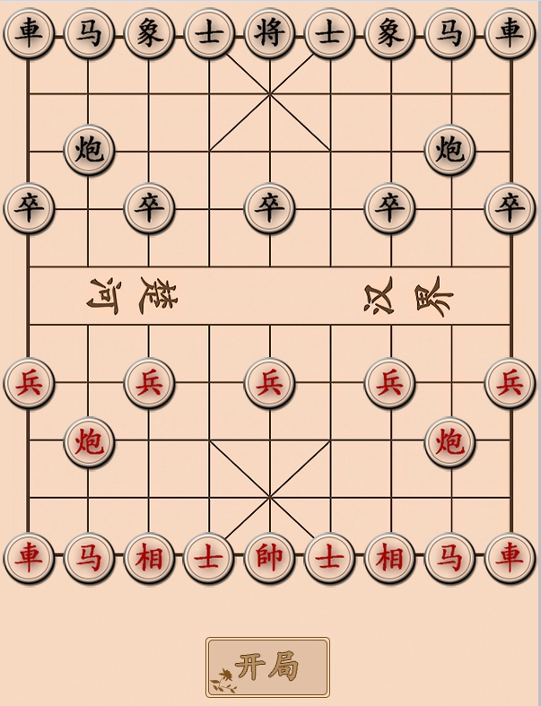
推箱子游戏
由QQ群友王同学提供
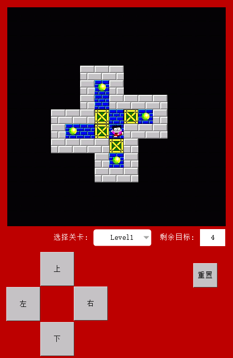
多功能测量仪
素材说明：界面华丽，带有示波器功能。
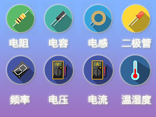
全键盘输入、密码登录
素材说明：
1、全键盘输入，支持大小写切换，数字，字符。
2、密码登录，利用掉电存储空间保存，修改密码。
3、进入设置页面的万能密码为890327。
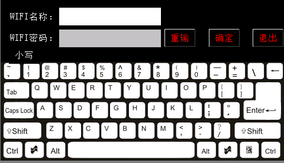
简易计算器
素材说明：
第一次接触串口屏，就随便做了个简易计算器，试试手，免MCU控制。 不支持负数和小数点，计算过大或出现负数时会有溢出问题。
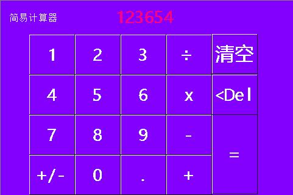
打兔子，无需单片机支持
- 素材说明：
根据前面的打兔子修改，无需单片机支持，直接运行，增加时间显示。
电压数据采集及系统参数设置
- 素材说明：
该案例单片机电压显示已有很多案例，不再多言，主要是屏本身参数设定。有如下功能： 1休眠时间：通过双态按钮实现休眠的开关功能。当休眠开时，可以通过cal界面来设置休眠时间；当休眠关时，休眠时间设置无效。 2工作时间：当屏处于非休眠状态时，可以一直“不间断”地记录工作时间。这里不间断是指切换页面的过程，它也一直保持工作。 3背光亮度：通过改变滑块的位置改变屏背光的亮度。
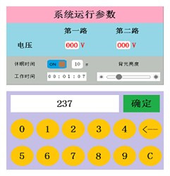
串口屏控制3路继电器
- 素材说明：
这个案例主要通过printh指令，从屏幕发送字节到串口，单片机收到后加以判断，并对指定的IO输出高低电平，实现继电器开关，并返回开关状态； 单片机端使用STC89C52；晶振11.0592；继电器控制IOP1^0,P1^1,P1^2；波特率9600
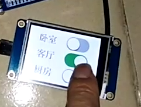
九宫格全英文输入（支持串口打印字符）
- 素材说明：
极简九宫格全英文输出（支持串口打印字符） 对于小于3.5寸的小屏如果做全键盘会影响触摸体验，因为键太多屏幕不够大只能缩小按键尺寸，影响视觉体验和触摸体验。九宫格键盘可以解决这个问题，10个按键布局实现全键盘的功能。数字，英文均可输入。您值得尝试一下!
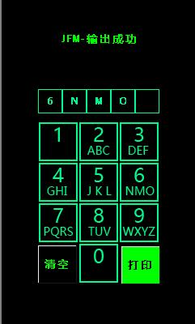
酷炫Loading进度条界面
- 素材说明：
酷炫Loading进度条界面 为节约FLASH空间本实例没有使用切换整图来实现动画，而是使用单个小图片元素通过定时器来实现超炫动画效果
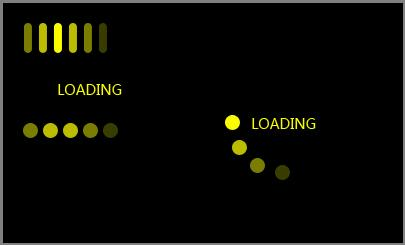
86面板智能家居
- 素材说明：
特别说:明对于单片机通讯方面，每个人的方法都不一样 所以我的通讯协议大家未必适合，大家可以用自己的方法实现单片机的控制
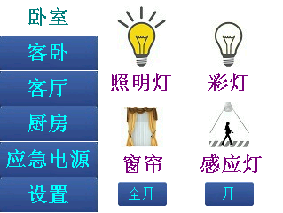
简洁圆形数字键盘（支持全局输入）
- 素材说明：
简洁圆形数字键盘（支持全局输入）
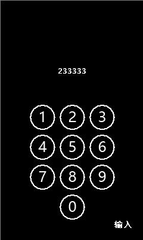
多种控件效果
- 素材说明：
在同一个页面中实现下拉列表框效果，并支持滚动条
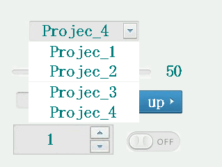